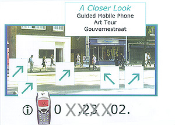
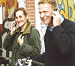
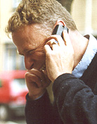

|  |  |  |  |  |
|
 
|
 |
A Closer Look Cell Phone Tour This poster was hung on the corner of Gouvernestraat and Nieuwe Binneweg where lots of people are always walking by. When someone called the number on the small 'poster' this is the 'art talk' they would hear: "Right now you are witnessing a performance piece, a type of urban street poetry. "The artist has shifted the arena for art out of the gallery and into the public domain by removing everyone on the opposite side of the street and replacing them with actors of similar stature. "You'll want to pay particularly close attention to the movements of the gifted actor passing by as that person subtly comments on a diversity of personal, social, and political issues." Back  |